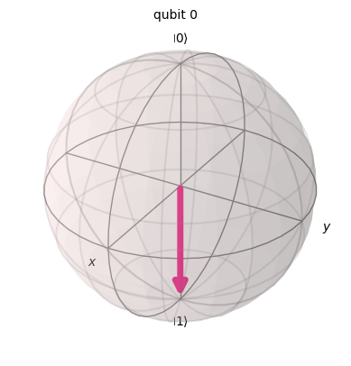

from qiskit import QuantumCircuit, Aer, execute
x_gate = QuantumCircuit(1)
x_gate.x(0)
x_gate.draw(output='mpl')Bramki jednokubitowe
Bramka X
Bramka X-gate reprezentowana jest przez macierz Pauli-X :
\[ X = \begin{pmatrix} 0 & 1 \\ 1 & 0 \\ \end{pmatrix} \]
Bramka X obraca kubit w kierunku osi na sferze Bloch’a o \(\pi\) radianów. Zmienia \(|0\rangle\) na \(|1\rangle\) oraz \(|1\rangle\) na \(|0\rangle\). Jest często nazywana kwantowym odpowiednikiem bramki NOT lub określana jako bit-flip.
from qiskit.visualization import plot_bloch_multivector
backend = Aer.get_backend('statevector_simulator')
state = execute(x_gate, backend).result().get_statevector()
state.draw('latex')
plot_bloch_multivector(state)
x_gate2 = QuantumCircuit(1)
x_gate2.x(0)
x_gate2.x(0)
x_gate2.draw('mpl')backend = Aer.get_backend('statevector_simulator')
state = execute(x_gate2, backend).result().get_statevector()
state.draw('latex')
plot_bloch_multivector(state)
bramka SX
Bramka SX jest pierwiastkiem kwadratowym bramki X. Dwukrotne zastosowanie powinno reazlizowac bramkę X.
\[ SX = \frac{1}{2}\begin{pmatrix} 1+i & 1-i \\ 1-i & 1+i \\ \end{pmatrix} \]
sx_gate = QuantumCircuit(1)
sx_gate.sx(0)
sx_gate.draw(output='mpl')backend = Aer.get_backend('statevector_simulator')
result = execute(sx_gate, backend).result().get_statevector()
plot_bloch_multivector(result)sx_gate2 = QuantumCircuit(1)
sx_gate2.sx(0)
sx_gate2.sx(0)
sx_gate2.draw(output='mpl')backend = Aer.get_backend('statevector_simulator')
result = execute(sx_gate2, backend).result().get_statevector()
plot_bloch_multivector(result)
Z gate
\[ Z = \begin{pmatrix} 1 & 0 \\ 0 & -1 \\ \end{pmatrix} \]
z_gate = QuantumCircuit(1)
z_gate.z(0)
z_gate.draw(output='mpl')backend = Aer.get_backend('statevector_simulator')
result = execute(z_gate, backend).result().get_statevector()
plot_bloch_multivector(result)
RZ gate
\[ RZ = \begin{pmatrix} 1 & 0 \\ 0 & e ^{i \phi } \\ \end{pmatrix} \]
import numpy as np
pi = np.pi
rz_gate = QuantumCircuit(1)
rz_gate.rz(pi/2, 0)
rz_gate.draw(output='mpl')backend = Aer.get_backend('statevector_simulator')
result = execute(rz_gate, backend).result().get_statevector()
plot_bloch_multivector(result)
rz_gate2 = QuantumCircuit(1)
rz_gate2.sx(0)
rz_gate2.rz(pi/2, 0)
rz_gate2.draw(output='mpl')backend = Aer.get_backend('statevector_simulator')
result = execute(rz_gate2, backend).result().get_statevector()
plot_bloch_multivector(result)
Hadamard gate
Bramka Hadamarda przetwarza stan \(|0\rangle\) na kombinacje liniowa (superpozycje) \(\frac{|0\rangle + |1\rangle}{\sqrt{2}}\), co oznacza, że pomiar zwróci z takim samym prawdopodobieństwem stanu 1 lub 0. Stan ten często oznaczany jest jako: \(|+\rangle\).
\[ H = \frac{1}{\sqrt{2}}\begin{pmatrix} 1 & 1 \\ 1 & -1 \\ \end{pmatrix} \]
h_gate = QuantumCircuit(1)
h_gate.h(0)
h_gate.draw(output='mpl')
backend = Aer.get_backend('statevector_simulator')
result = execute(h_gate, backend).result().get_statevector()
plot_bloch_multivector(result)
h_gate2 = QuantumCircuit(1)
h_gate2.h(0)
h_gate2.h(0)
h_gate2.draw('mpl')backend = Aer.get_backend('statevector_simulator')
state = execute(h_gate2, backend).result().get_statevector()
display(state.draw('latex'))
plot_bloch_multivector(state)\[ |0\rangle\]

Bramka parametryzowana Ry
\[ R(\alpha) = \begin{pmatrix} \cos{\alpha} & -\sin{\alpha}\\ \sin{\alpha} & \cos{\alpha} \\ \end{pmatrix} \]
ry_gate = QuantumCircuit(1)
pi = np.pi
ry_gate.ry(pi/2,0)
ry_gate.draw(output='mpl')backend = Aer.get_backend('statevector_simulator')
result = execute(ry_gate, backend).result().get_statevector()
plot_bloch_multivector(result)
CX gate (CNOT gate)
The controlled NOT (or CNOT or CX) gate acts on two qubits. It performs the NOT operation (equivalent to applying an X gate) on the second qubit only when the first qubit is \(\ket{1}\) and otherwise leaves it unchanged.
Note: Qiskit numbers the bits in a string from right to left.
\[ CX = \begin{pmatrix} 1 & 0 & 0 & 0 \\ 0 & 1 & 0 & 0 \\ 0 & 0 & 0 & 1 \\ 0 & 0 & 1 & 0 \\ \end{pmatrix} \]
cx_gate = QuantumCircuit(2)
cx_gate.cx(0,1)
cx_gate.draw(output='mpl')
Zadanie 1 - Sprawdź działanie bramki - CZ na dwukubitowym układzie. Następnie zbuduj drugi obwód złożony z bramek: H(1) (na drugim kubicie) CX(0,1) i H(1) - co możesz zaobserwować?
Zadanie 2 - zbuduj obwod kwantowy złożony z 10 kubitów, zastosuj bramkę H(0) do kubitu 0 i 9 bramek CNOT gdzie kubitem kontrolnym jest kubit 0 a targety to kubity od 1 do 9. Mozesz uzyć do pętli albo listy.
Zadanie 3 - zbuduj obwod kwantowy złożony z 10 kubitów. Zastosuj bramkę H do całego rejestru kwantowego.Następnie dodaj bramkę CNOT gdzie kubitami kontrolnymi sa kubity 1-9 a target to kubit 0. Następnie dodaj bramkę H do każdego kubitu.
Przydatne definicje dla obwodów
from qiskit import QuantumRegister, ClassicalRegister, QuantumCircuit
q = QuantumRegister(10)
c = ClassicalRegister(10)
ci = QuantumCircuit(q,c)
ci.h(q)
ci.draw('mpl')# CCCH gate
from qiskit.circuit.library.standard_gates import HGate
CCCH = HGate().control(3)
ci.append(CCCH, [0,1,3,2])
ci.draw('mpl')